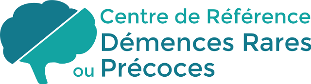

Informer
Mettre à disposition des informations sur la PSP et la DCB, à destination des personnes concernées, de leurs proches et des professionnels de santé.

MarseilleHôpital de la TimoneINFORMATION ET SOUTIEN ASSOCIATIF
PSP France est une association de patients et de proches concernés par la paralysie supranucléaire progressive (PSP) et la dégénérescence corticobasale (DCB).
Consulter le site de PSP FranceLE RÔLE DE L’ASSOCIATION
Mettre à disposition des informations sur la PSP et la DCB, à destination des personnes concernées, de leurs proches et des professionnels de santé.
Proposer une écoute et favoriser les échanges entre familles, notamment par des rencontres et des contacts de proximité.
Contribuer au financement de projets scientifiques et à la diffusion des connaissances sur ces maladies.
Sensibiliser aux difficultés rencontrées par les personnes malades et leurs aidants, en lien avec les acteurs sanitaires et médico-sociaux.
L’accompagnement associatif complète le parcours de soins. Les décisions de diagnostic, de traitement et de suivi relèvent de l’équipe médicale.
Présentation d’après les missions publiées par PSP France. Informations consultées le 28 septembre 2026.